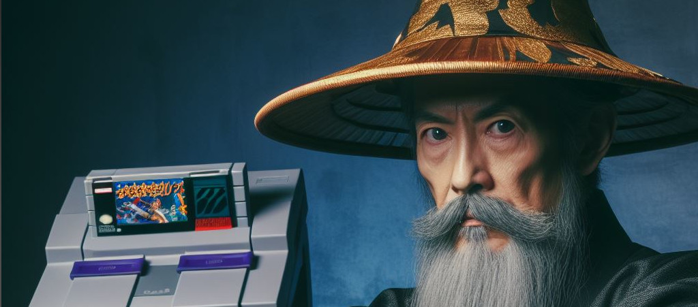

Ximira encontra a Nintendo
Era uma vez, o grande professor Ximira, conhecido por sua sabedoria e conhecimento vasto. Ele era respeitado em toda a cidade por sua habilidade de resolver os problemas mais complexos. No entanto, havia um desafio que até mesmo o professor Ximira achava difícil de superar: o Super Nintendo, o maior console de todos os tempos.
O Super Nintendo, com seus gráficos coloridos e jogos envolventes, havia conquistado o coração de todas as crianças da cidade. Elas passavam horas jogando, completamente absortas em mundos de fantasia e aventura. O professor Ximira, no entanto, estava preocupado. Ele temia que as crianças estivessem passando tempo demais jogando e não o suficiente aprendendo.
Então, o professor Ximira decidiu enfrentar o Super Nintendo. Ele não tinha a intenção de destruir o console amado por todos. Em vez disso, ele queria encontrar uma maneira de usar o Super Nintendo para ajudar no aprendizado das crianças.
Ele passou dias estudando o console e seus jogos. Ele jogou cada jogo, aprendeu cada regra, e descobriu cada segredo. Então, ele começou a ver padrões. Ele percebeu que muitos dos jogos exigiam habilidades de resolução de problemas, pensamento crítico e coordenação motora fina.
Armado com essa nova compreensão, o professor Ximira começou a incorporar o Super Nintendo em suas aulas. Ele criou lições que combinavam os conceitos acadêmicos com os jogos do console. Por exemplo, ele usou os jogos de plataforma para ensinar física, os jogos de estratégia para ensinar lógica, e os jogos de RPG para ensinar habilidades de leitura e escrita.
No final, o professor Ximira não apenas "lutou" contra o Super Nintendo, mas também encontrou uma maneira de transformá-lo em uma ferramenta de aprendizado. As crianças estavam mais engajadas do que nunca, e o professor Ximira provou mais uma vez por que era tão respeitado. E assim, o grande professor Ximira e o maior console de todos os tempos, o Super Nintendo, trabalharam juntos para o benefício de todos.